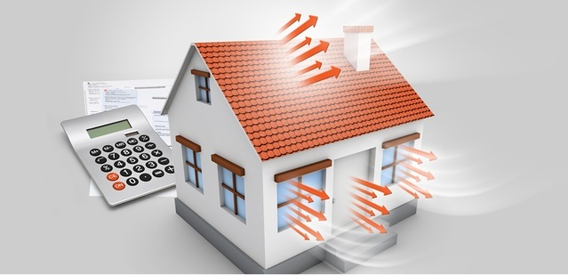

Введение - как уходит тепло из дома.

По материалам книги Анны Владимировны Печкаревой
" Утепление летнего дома . "
А также из других источников Интернет
Уважаемый Читатель - после ознакомления с Книгой
рекомендую Вам заказать ее бумажное издание.
Больше всего тепла уходит из дома через наружные стены – до 45 % в зависимости от типа конструкции здания. Окна, несмотря на то, что они занимают относительно малую часть общей площади стен, сопротивляются теплопотерям еще хуже: где-то в 2 – 3 раза меньше, чем стены. Поэтому на них отводится еще примерно 20 – 30 % утечек тепла. Значительная часть тепла уходит из здания через крышу: приблизительно 3 – 10 % тепла теряется через перекрытия, и еще немного – через инженерные коммуникации.
Конечно, невозможно прийти к полному отсутствию утечек тепла в здании, но можно попытаться свести их к минимуму. Например, сократив периметр наружных стен дома. Но чтобы не менять архитектуру жилища, следует его грамотно утеплить.
Прочитав нашу книгу, вы узнаете, как можно утеплить фундамент, полы, стены, крыши, двери и окна. О каждой из перечисленных составляющих дома подробно рассказано в отдельной главе книги. Кроме того, вы найдете точную информацию о материалах и инструментах, необходимых для каждого вида работ.